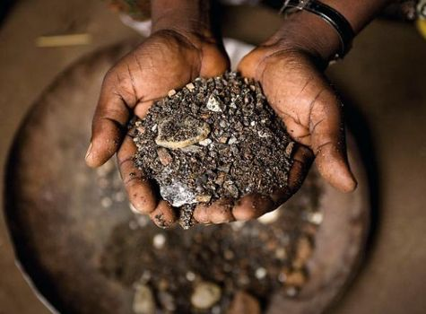
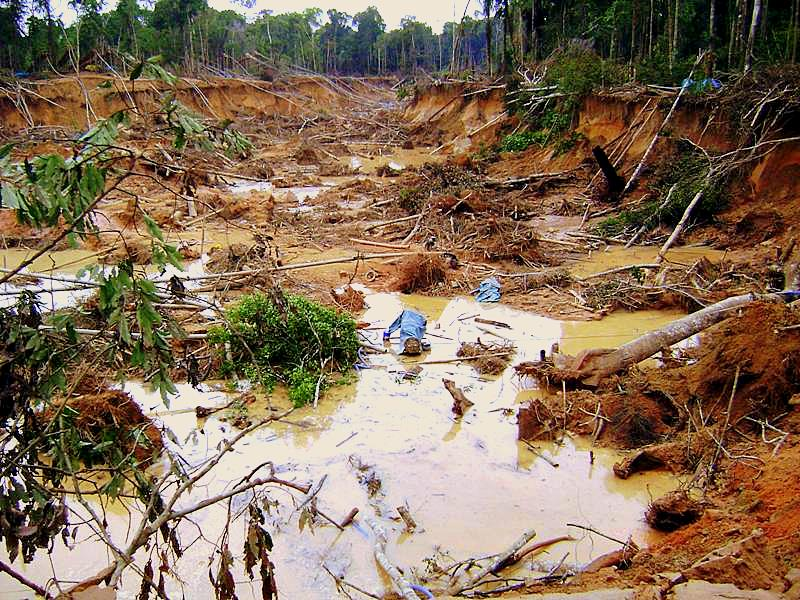

Página principal |
Oro ilegal |
Coltán |
Explotación de oro |
Fiebre del oro |
|
El coltan es un mineral, combinación de niobio y tantalio, hasta hace poco desconocido. Las grandes industrias electrónicas para poder producir necesitan de este mineral, ya que tiene una serie de propiedades y características que son necesarias para el buen funcionamiento de nuestros aparatos electrónicos, como nuestro celular, nuestros computadores, nuestro gps, entre otras cosas que hacen parte de una lista casi interminable. |
 |
Problemas de salud por minería |
Acciones legales contra minería a |
¿Qué pasó con nuestras selvas? |